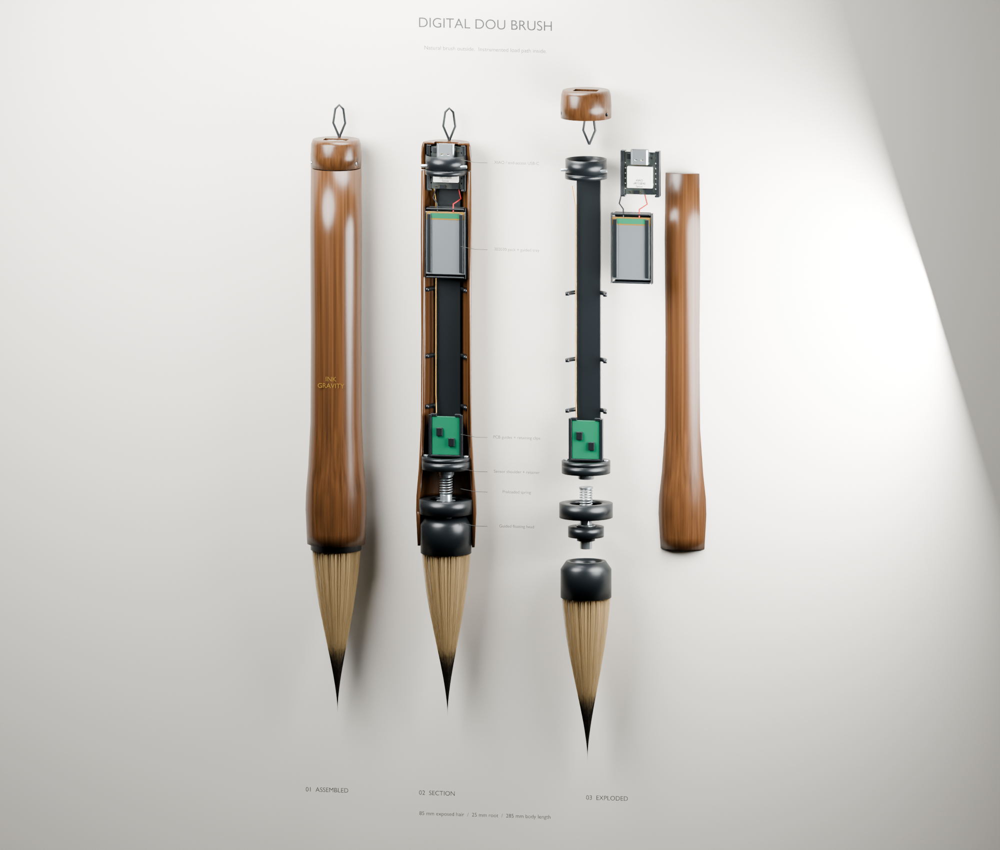

数位毛笔
Digital Brush
把数采做扎实，把模型训好，做成一支数位毛笔。
Collect better data, train a better model, and make a digital calligraphy brush.
现在市面上已经有数位笔了，但那是给手写板和平板用的。为了把数据采得更扎实，我们打算自己做一支数位毛笔；这支笔做出来之后，同一套采集思路还能往水墨画、水粉、水彩、油画的笔触上延。
Digital styli already exist, but they are built for drawing tablets and handwriting pads. To collect better data we plan to build our own digital brush; once it works, the same collection approach can extend to ink wash, gouache, watercolour and oil painting.
新版斗笔爆炸图
Updated Dou Brush: Exploded View

早期设计
Earlier Design